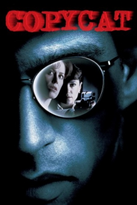

Country:United States, 124 minutes
Spoken languages:
Genres:Thriller, Crime
Director(s):Jon Amiel
Writer(s):Ann Biderman, David Madsen
Video Codec:Unknown
Number: 2151


Certification:R
Storyline:
An agoraphobic psychologist and a female detective must work together to take down a serial killer who copies serial killers from the past.
Cast:

Medium: Original DVD,
Loaned: No
Aspect ratio: Unknown